Meet the team making mentorship happen.
Kipchumba Korir
Founder & Director Globalink Mentorship InitiativeKipchumba Korir is a seasoned educator, youth mentor, and community development champion with deep expertise in governance, academic guidance, and international student career pathways. As the Founder and Director of the Globalink Mentors Association and an executive education consultant, Kipchumba brings a wealth of real-world knowledge in structuring cross-continental mentorship programs, driving student self-discovery, and steering inclusive institutional leadership. As a mentor, Kipchumba is passionate about bridging the gap between classroom education and global professional opportunities, equipping young individuals with the practical tools and mindset needed to lead with integrity, vision, and purpose.
View profile →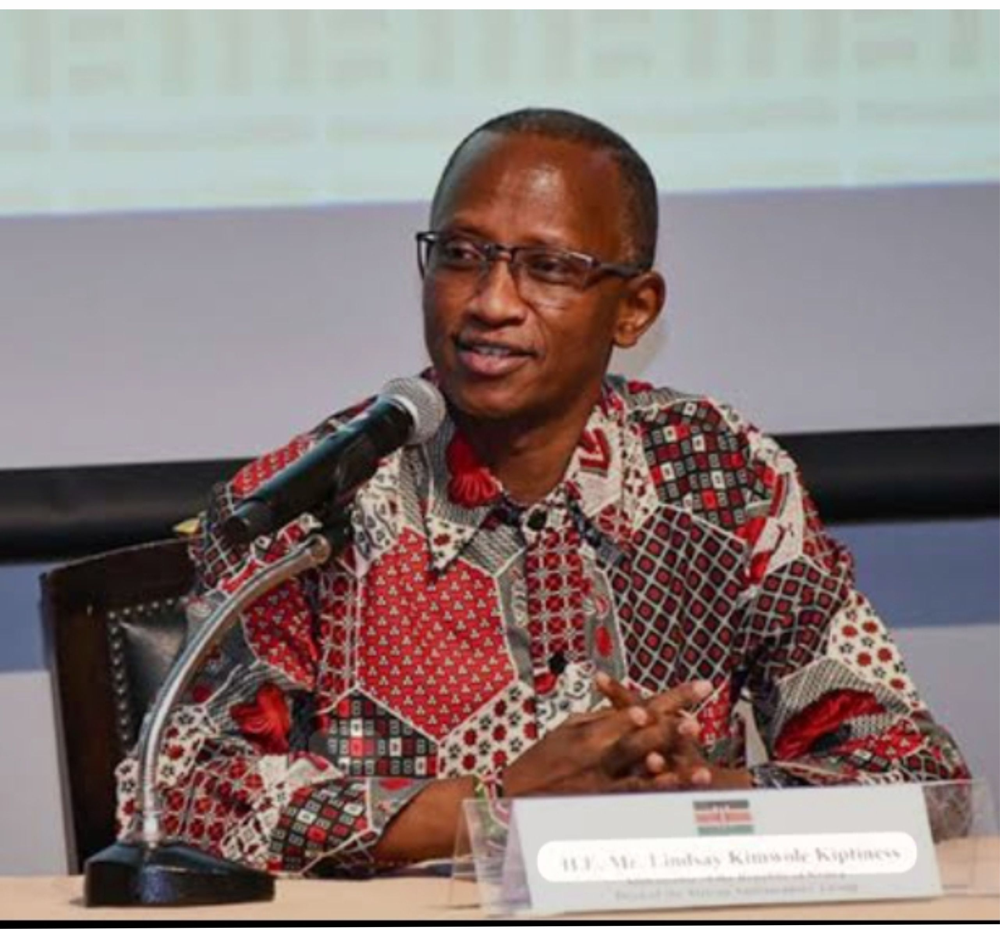
Amb. Lyndsay Kimwolei Kiptiness
Patron Globalink MI & Foreign AffairsAmb. Lindsay Kimwolei Kiptiness is a veteran diplomat and international relations champion with deep expertise in cross-border diplomacy, bilateral negotiations, and global youth empowerment frameworks. As the Deputy Director General for the Middle East Directorate at the Ministry of Foreign and Diaspora Affairs and Kenya’s former Ambassador to the Kingdom of Thailand, Ambassador Kiptiness brings a wealth of high-level geopolitical knowledge in navigating foreign policy, steering international trade, and forging strategic global partnerships. As the Patron of the Globalink Mentorship Initiative, Amb. Kiptiness is passionate about bridging the gap between national statecraft and youth leadership, equipping emerging professionals with the global perspectives, diplomatic tact, and visionary thinking needed to champion impactful development both locally and on the world stage.
View profile →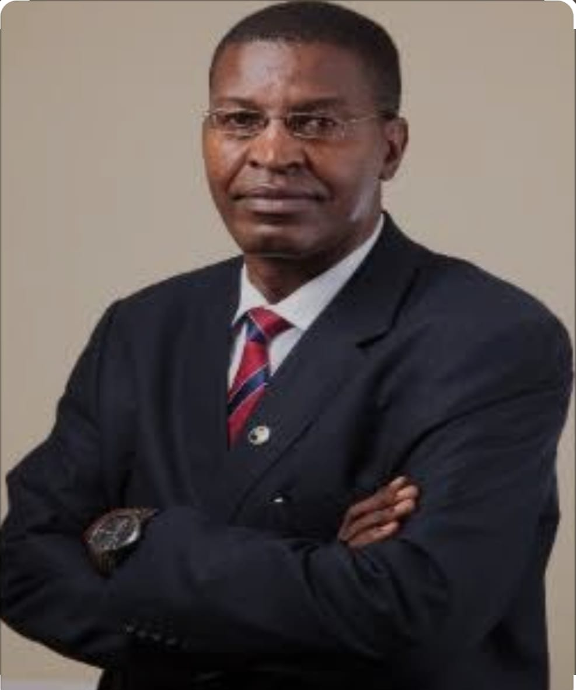
Amb. prof. Peter Ngure
UNESCO Kenyan Ambassador to FranceH.E. Amb. Prof. Peter Ngure, PhD is a distinguished academic scholar, researcher, and veteran diplomat with deep expertise in higher education leadership, scientific policy, and multilateral diplomacy. As Kenya's Ambassador and Permanent Delegate to UNESCO in Paris, France—having presented his credentials in February 2024—Prof. Ngure brings a wealth of real-world knowledge in steering education, science, cultural heritage, and youth empowerment frameworks on the global stage. As a mentor and leader, Prof. Ngure is passionate about bridging the gap between academic research and international policy, equipping young scholars and emerging professionals with the intellectual rigor, cross-cultural perspective, and vision needed to champion sustainable development.
View profile →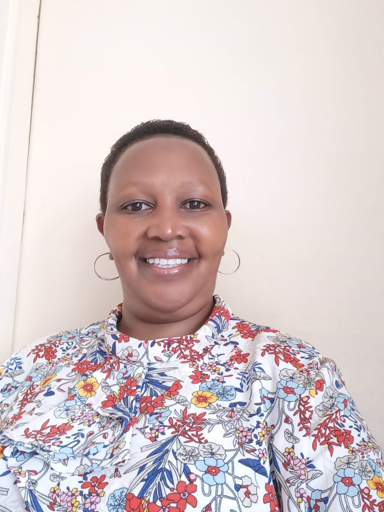
Prof. Olympia Jelagat Keino
Maseno UniversityProf. Olympia Jelagat Keino-Okal (often referred to by students and peers as Mrs. Olympia Okal) is a celebrated academic, community health champion, and veteran youth mentor with deep expertise in public health, community nutrition, and institutional welfare leadership. As a senior lecturer within the School of Public Health at Maseno University and the director heading the university's corporate HIV/AIDS awareness and intervention programs, Olympia brings a wealth of real-world knowledge in steering community outreach, piloting evidence-based health interventions, and managing regional educational boards. As a mentor, Olympia is passionately dedicated to the holistic academic and social welfare of students, going beyond the classroom to equip the next generation of public health innovators and community leaders with the ethical framework, personal resilience, and practical vision needed to leave a lasting, transformative legacy in society.
View profile →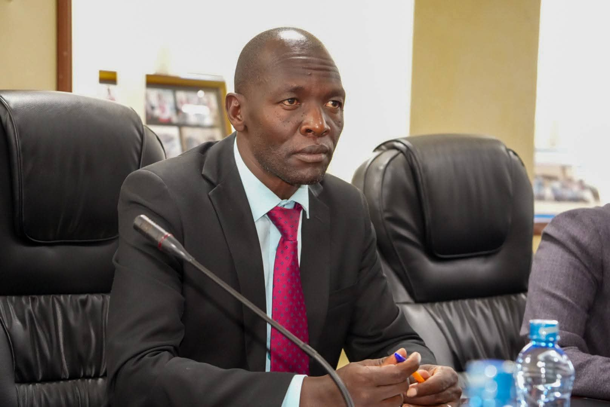
Dir. Abraham Cheruiyot
Dir. Lake Victoria Water Works Dev't AgencyDirector Abraham Cheruiyot is a seasoned corporate administrator and community development champion with deep expertise in governance, large-scale infrastructure oversight, and agricultural cooperatives. As a non-executive director at a major state corporation and CEO of a leading agricultural cooperative society, Abraham brings a wealth of real-world knowledge in navigating public policy, driving socioeconomic empowerment, and spearheading complex regional projects.As a mentor, Abraham is passionate about bridging the gap between professional leadership and grassroots community impact, equipping young professionals with the practical tools needed to lead with integrity, vision, and empathy.
View profile →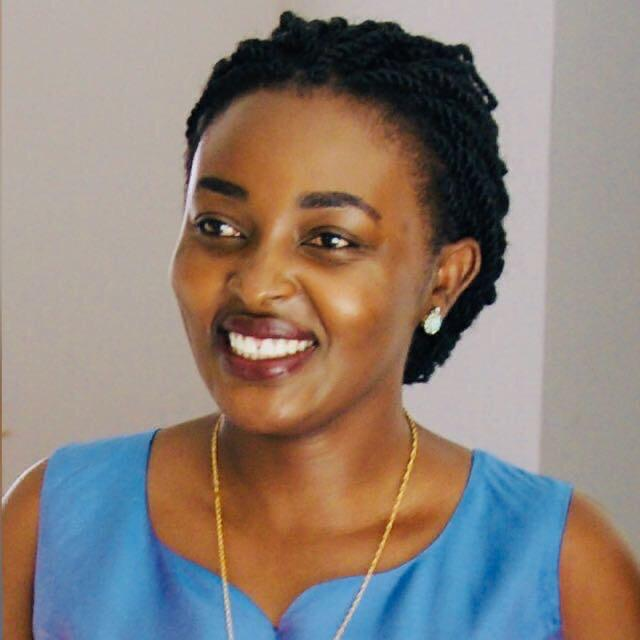
HE. Amb. Valerie Rugene
Ambassador & Deputy of Head of Mission -Vienna, AustriaH.E. Amb. Valerie Rugene is a distinguished diplomat, multilateral policy expert, and international relations champion with deep expertise in bilateral negotiations, global cross-border labor mobility, and strategic statecraft. As the Ambassador and Deputy Head of Mission at the Embassy and Permanent Mission of the Republic of Kenya in Vienna, Austria—where she also oversees critical multilateral engagements with global bodies like the UN, IAEA, and UNIDO—Valerie brings a wealth of real-world knowledge in steering complex foreign policy, executing cross-continental economic pacts, and championing Global South development frameworks. As a mentor, Valerie is passionate about bridging the gap between local talent and international career opportunities, equipping emerging leaders and young professionals with the global perspectives, strategic diplomacy, and visionary mindset needed to excel on the international stage.
View profile →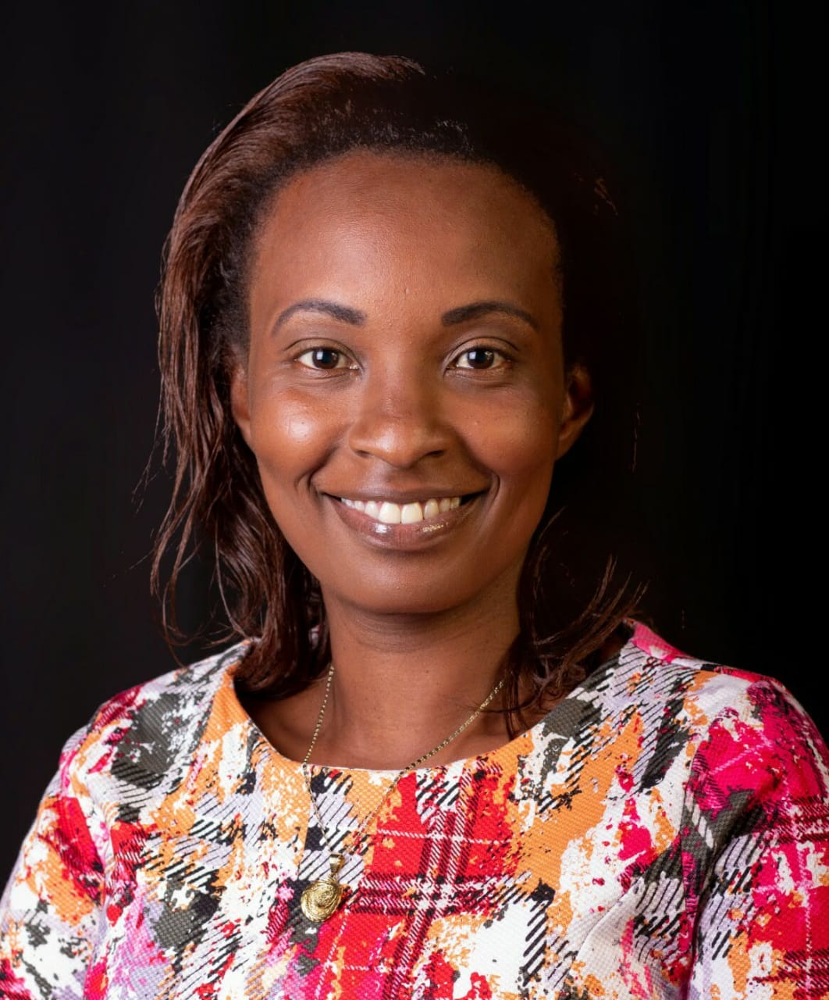
Petronella Gathu
EntrepreneurPetronella Gathu is a dynamic social entrepreneur, strategic leader, and youth development specialist with deep expertise in sustainable agribusiness, corporate operations, and global education frameworks. As the Co-founder and CEO of Mimea Farm Produce and the Head of Strategic Partnerships and Operations at Grace International Education, Petronella brings a wealth of real-world knowledge in building purpose-driven companies, scaling agricultural value chains, and forging impactful cross-border collaborations. As a mentor, Petronella is passionate about bridging the gap between innovative entrepreneurship and sustainable grassroots impact, empowering young visionaries and professionals with the leadership grit, operational tools, and growth mindset needed to build scalable solutions that transform communities.
View profile →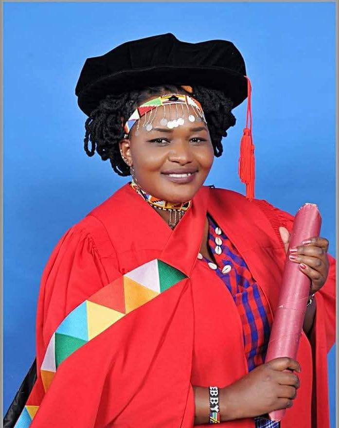
Dr. Betty Chebitok-Wang (PhD)
Clinical Psychologist & Nebraska Criminal Justice System, USADr. Betty Chebitok-Wang (PhD) is a distinguished clinical psychologist, academic advisor, and behavioral intervention scholar with deep expertise in childhood psychology, institutional mental health systems, and forensic-behavioral risk assessments. As an Academic Advisor and researcher at the University of Nebraska–Lincoln with extensive collaboration ties across psychological service frameworks—including behavioral metrics associated with institutional and criminal justice cross-sections—Dr. Chebitok-Wang brings a wealth of real-world knowledge in evaluating behavioral patterns, navigating systemic support networks, and assessing risk within community settings. As a mentor, Dr. Chebitok-Wang is passionate about bridging the gap between rigorous clinical research and institutional practice, equipping young scholars and emerging healthcare professionals with the diagnostic acumen, systemic understanding, and cultural empathy needed to foster mental resilience and advocate for vulnerable populations worldwide.
View profile →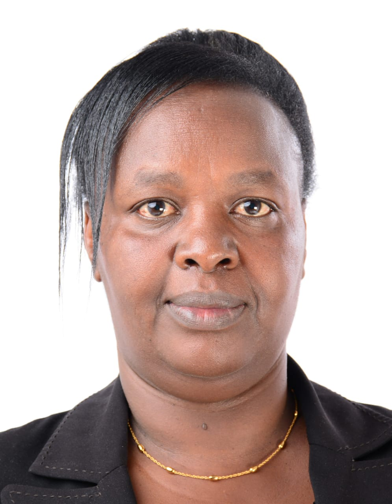
Dr. Mary Kerich
Academic & Research Mentor, Moi UniversityDr. Mary Kerich brings academic rigor, research excellence, and institutional leadership from her tenure at Moi University. As a dedicated educator and thought leader, she fosters academic curiosity and professional resilience in her mentees. Mentorship Focus: Academic research methodologies, career planning in higher education, navigating institutional systems, and publishing academic literature.Mentorship Style: Analytical, structured, and growth-oriented. She supports mentees in developing robust research frameworks and mapping out sustainable career paths in academia and beyond.
View profile →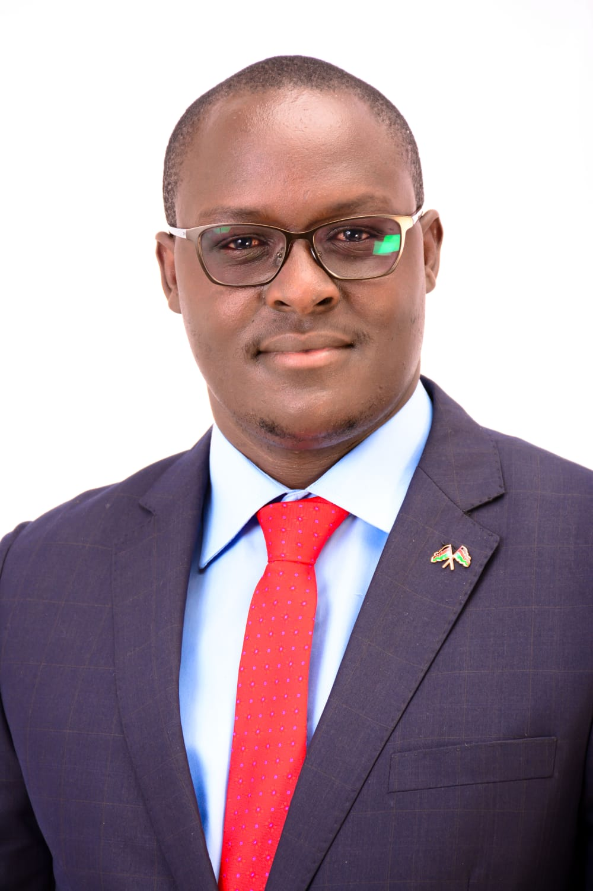
Eng. Benard Maranga
Principal Officer, Communications Authority of KenyaEng. Benard Maranga is a distinguished telecommunications engineer and digital policy champion with deep expertise in spectrum management, technological compliance, and national ICT infrastructure oversight. As a Principal Officer at the Communications Authority of Kenya, Benard brings a wealth of hands-on knowledge in navigating complex regulatory environments, steering high-level institutional frameworks, and shaping the future of connectivity in East Africa. As a mentor, Benard is dedicated to transforming theoretical engineering concepts into real-world industrial triumphs, empowering emerging researchers and young tech innovators with the strategic vision, technical grit, and global regulatory insight needed to drive the modern digital economy.
View profile →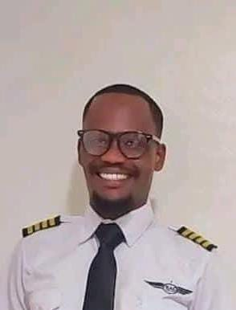
Cpt. Nimrod Kimeli
University of Arizona & Commercial pilot (Flying school) GuestCpt. Nimrod Kimeli is a highly skilled commercial pilot, flight instructor, and aviation safety advocate with deep expertise in aeronautical precision, multi-engine flight operations, and advanced pilot training methodologies. Drawing from rigorous technical insights and an international educational background connected to the University of Arizona, Captain Kimeli brings a wealth of real-world knowledge in navigating complex flight academy curricula, cultivating cockpit discipline, and coaching student pilots through the intense milestones of earning private and commercial wings. As a guest mentor for the Globalink Mentorship Initiative, Captain Kimeli is passionate about bridging the gap between flight school training and international aviation careers, equipping the next generation of aviators with the structural knowledge, operational resilience, and situational leadership needed to command the modern skies.
View profile →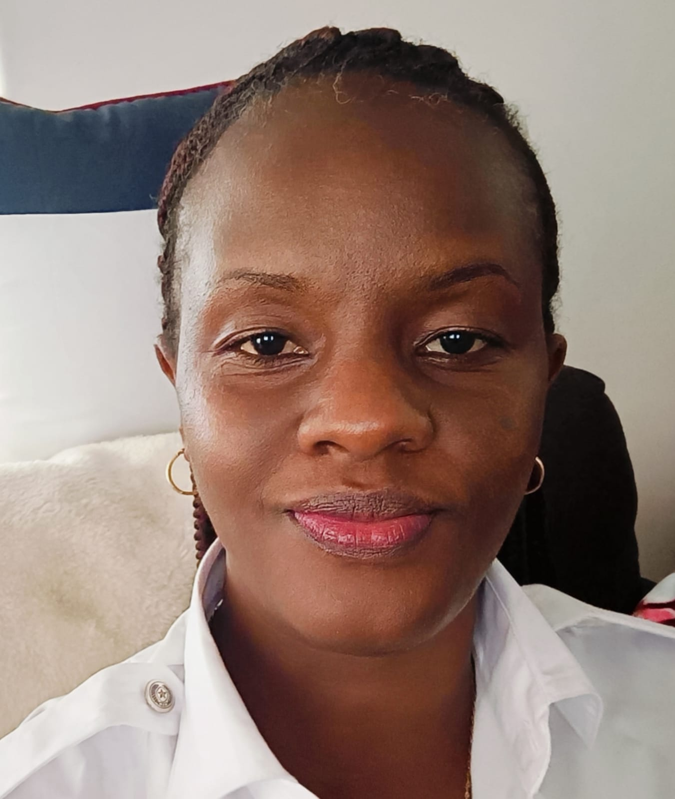
Susan Mbithi
CEO Olosotua ltdSusan Mbithi is a dynamic business leader, corporate strategist, and entrepreneurship champion with deep expertise in enterprise management, operational scalability, and commercial growth. As the Chief Executive Officer of Olosotua Ltd, Susan brings a wealth of real-world knowledge in navigating competitive markets, driving organizational efficiency, and spearheading sustainable business practices. As a mentor, Susan is passionate about bridging the gap between entrepreneurial ambition and market execution, equipping young business professionals and emerging startup founders with the practical tools, leadership resilience, and strategic mindset needed to build viable, high-impact enterprises.
View profile →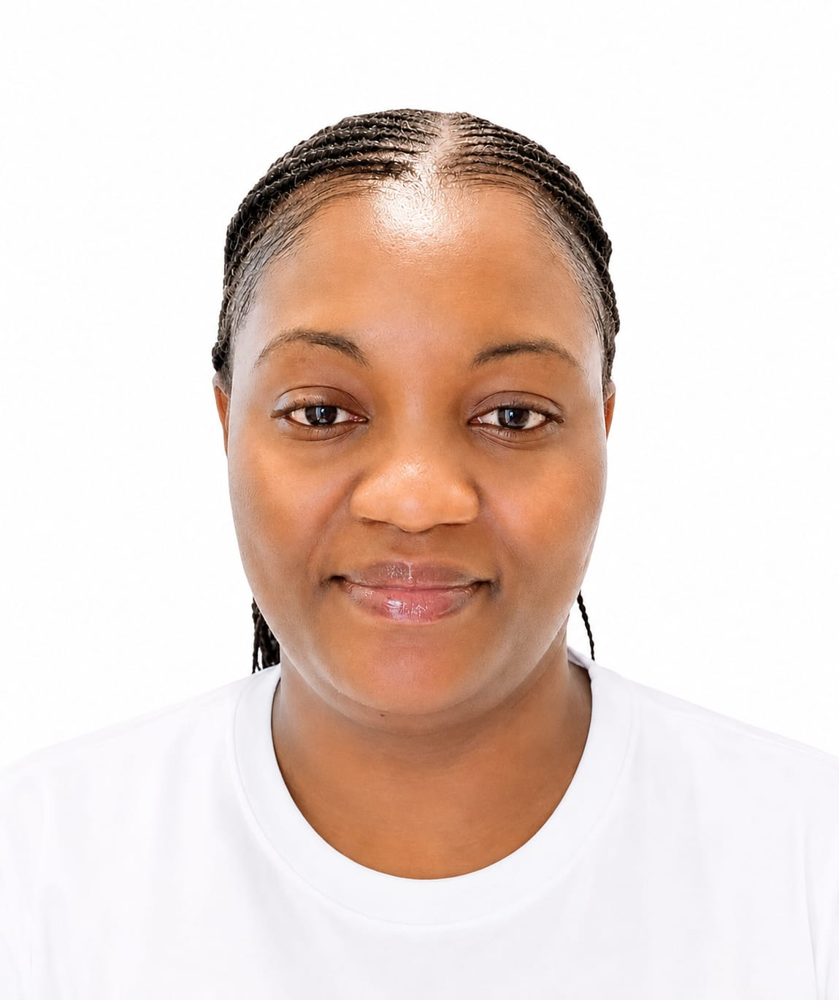
WO 2 Akinyi LN
KAF Avionics technicianWarrant Officer Class II (WO2) Akinyi LN is an accomplished military aviations professional and technical leader with deep expertise in advanced aerospace engineering, aircraft system troubleshooting, and tactical avionics maintenance within the Kenya Air Force (KAF). As a senior non-commissioned officer (NCO) and specialized avionics technician, Akinyi brings a wealth of hands-on knowledge in ensuring the operational readiness of elite defense air platforms, maintaining critical flight systems, and leading multi-disciplinary technical crews under rigorous operational timelines. As a mentor for the Globalink Mentorship Initiative, Akinyi is deeply passionate about bridging the gap between rigorous engineering theory and mission-critical field deployment, empowering emerging engineering talent and young STEM innovators with the precision, technical resilience, and disciplined leadership required to pioneer breakthroughs in the global aerospace and technology sectors.
View profile →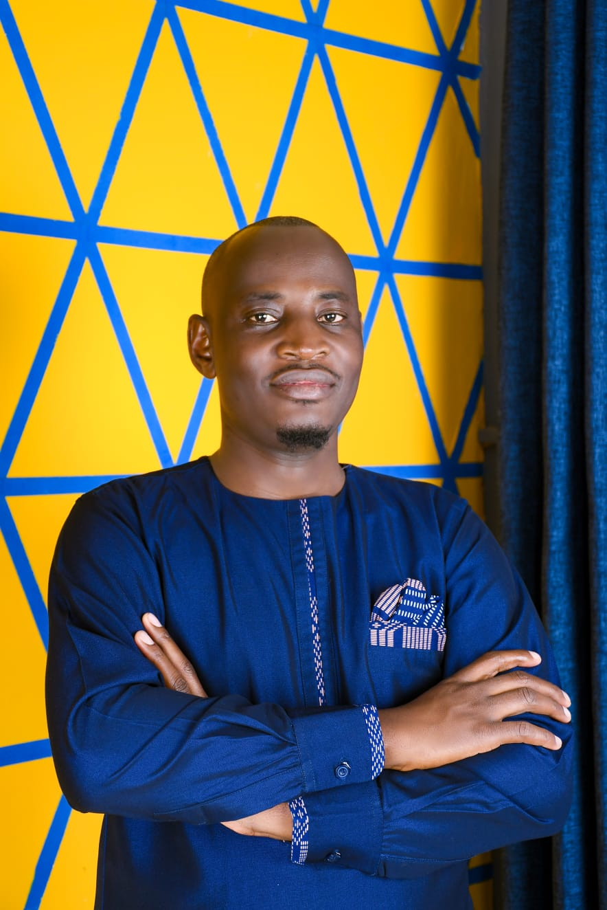
Dr. Daniel Omoro Achach
Law and Policy ExpertDr. Daniel Omoro Achach is a distinguished international trade law and policy expert, researcher, and legal practitioner with extensive experience across Africa, Europe, and multilateral institutions. Holding a Ph.D. in International Trade Law from Bond University and an MSc. from Lund University, Dr. Achach specializes in trade remedies, regional integration, digital trade, trade in services, and dispute resolution. He has spearheaded high-level consulting assignments for major continental and international bodies—including the AfCFTA Secretariat, EAC Secretariat, COMESA Secretariat & Court of Justice, UNECA, and GOPA Worldwide Consultants—guiding governments and private sectors on policy harmonization, regulatory audits, and trade negotiations. Alongside his advisory work, he serves as a Trainer and Facilitator in International Trade Policy at the Eastern and Southern Africa Management Institute (ESAMI) / trapca in conjunction with Lund University. Dr. Achach also serves as a Board Member/Director at Lake Victoria North Water Works Development Agency.
View profile →Want to join them?
We're always looking for volunteer mentors.
One hour a week, one school term at a time. No teaching experience required — just consistency and care.
Apply to Mentor